Things to do
Throughout Fontaine, there are various activities that can occupy our guests for endless experiences. They range from all sorts of cultural experiences, shopping, sightseeing/urban exploration, and nature/outdoor activities. All of these activities do not need to be limited to the main city either, they stretch to the outreaches of the nation.
Some of these activities in particular include:
- 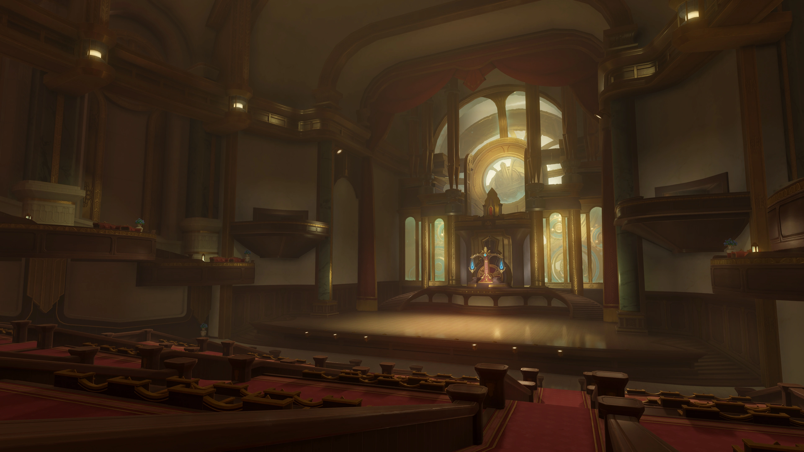 Attending one of our various court trials/opera performances
- 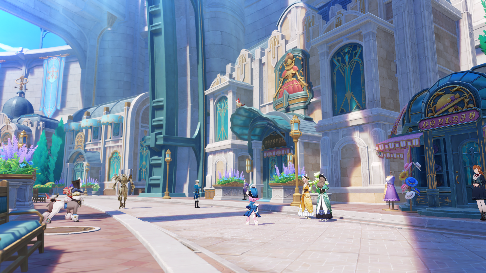 Visit our many shops such as Chioriya Boutique, Damoville Purveyor, Quartier Lyonnais, and Beaumont Workshop
-
 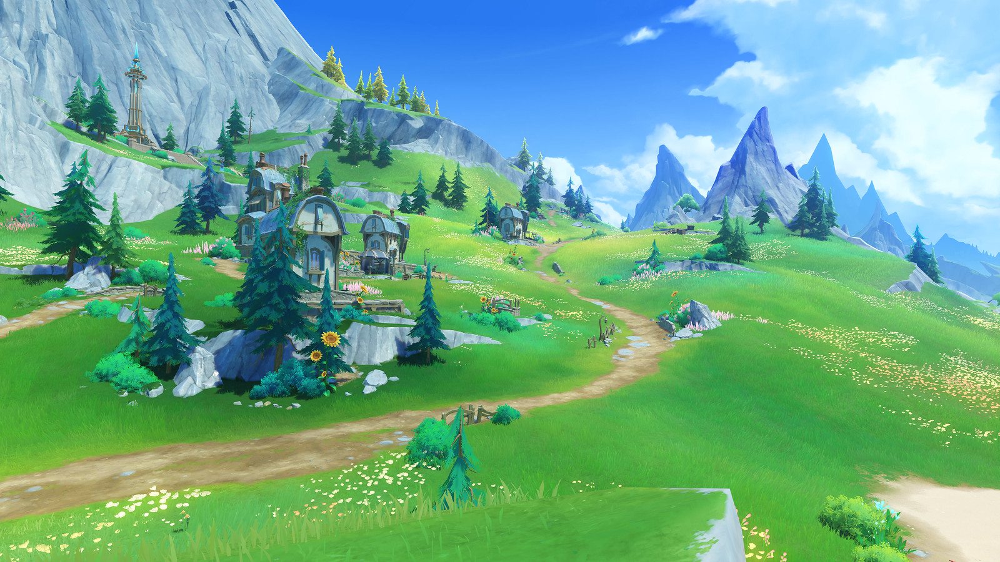
Go on relaxing nature hikes on the grassy plains of the Belleau region, to Erinnyes forest, to mountainous hikes up the Beryl region
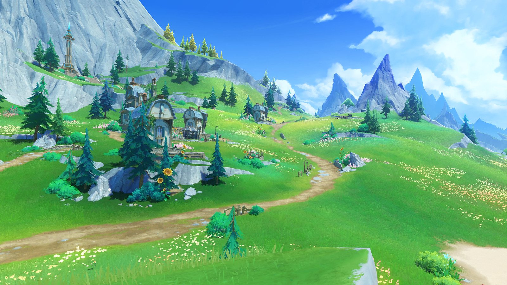
Go on relaxing nature hikes on the grassy plains of the Belleau region, to Erinnyes forest, to mountainous hikes up the Beryl region - 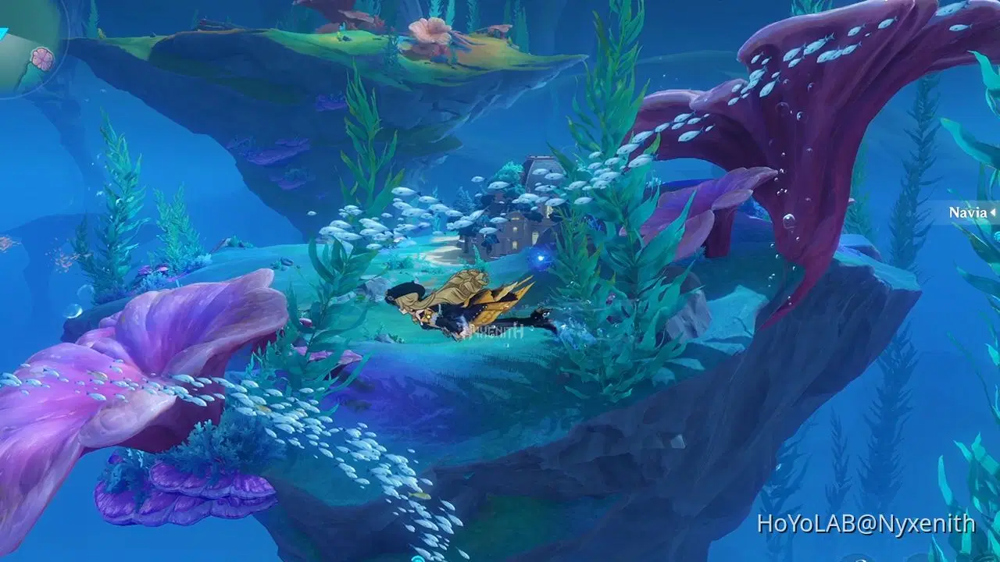 Swim in various lakes or rivers especially the hundreds of beaches we offer to the public
- 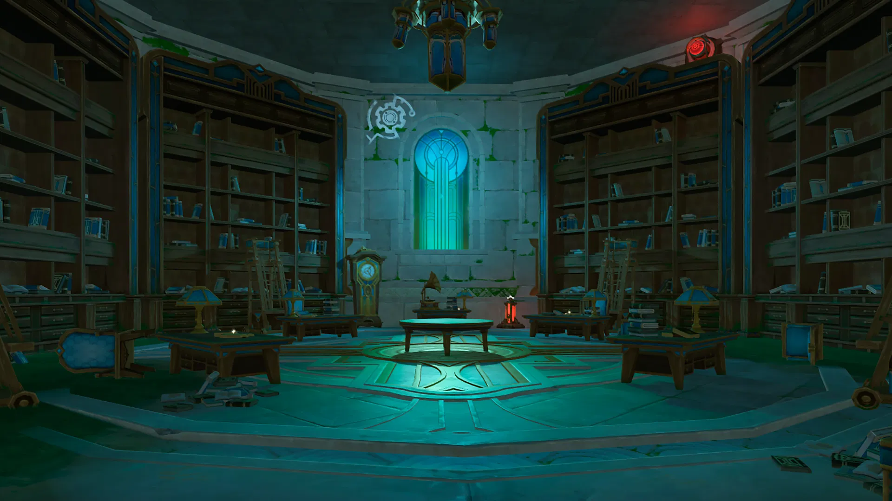 Visit the Fontaine research institute of kinetic energy engineering region to see first hand our technological advancements
- 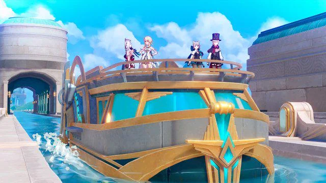 Ride our Aquabus transportation system that stretches throughout the entire nation
- 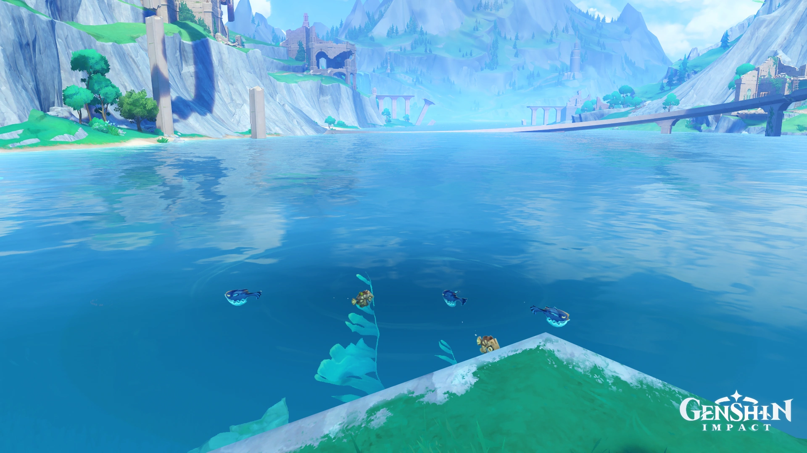 Endulge yourself in hundreds of fishing spots throughout the riversides
- 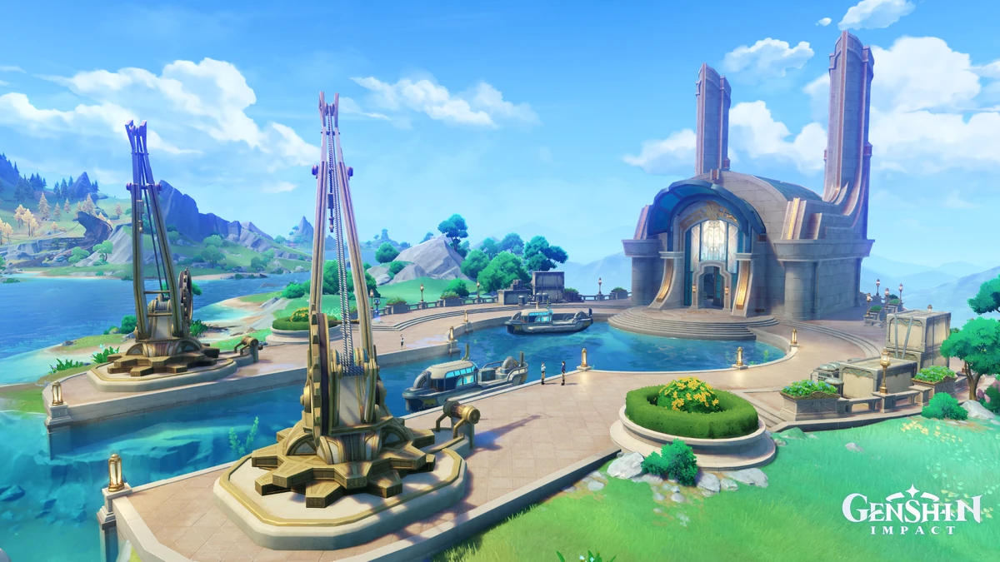 Visit our various docks and ports to ride our ships for cruising
- 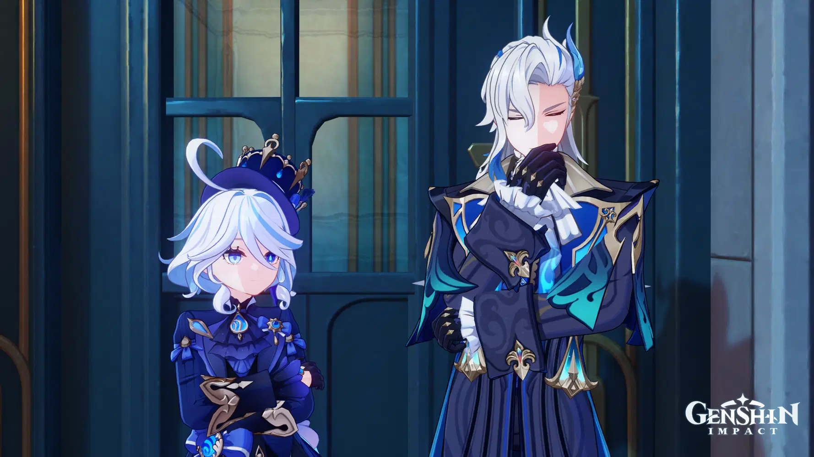 Potentially run into the Ludex of our nation, Monsieur Neuvillette or one of the idol of our nation, Lady Furina, one of the most well known actresses in our lands
- 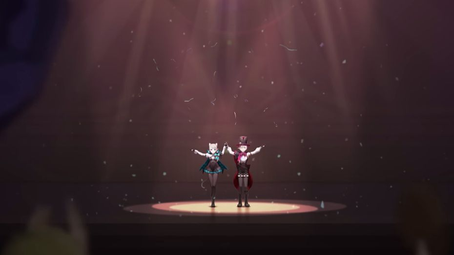 Visit our magic shows in our operahouses performed by our beloved Lyney and Lynette